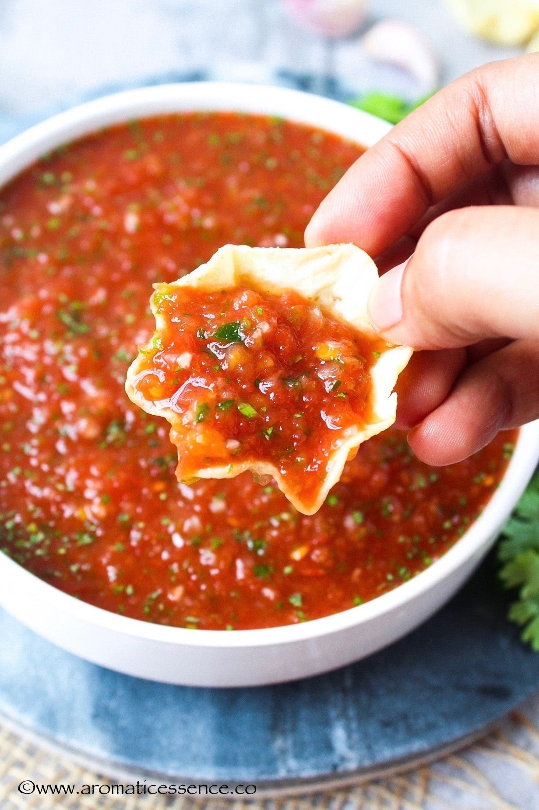
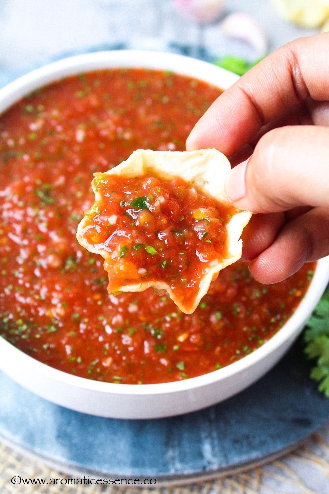

Homemade Salsa Recipe!
This is a simple homemade Salsa Recipe for all your culinary needs, and it is a healthy yet delicious way to make a dish of salsa that will impress all of your friends! This recipe has been passed down in my family for generations, and I think that I should finally share the secret recipe.
Materials and Ingrediants You Need:
- 2 (15-ounce) cans fire roasted tomatoes or use 4 cups chopped fresh tomatoes (1 3/4 pounds)
- 1/3 cup chopped white or sweet onion (half medium onion)
- 2 medium cloves garlic (2 teaspoons minced)
- 1 to 2 medium jalapeño or serrano peppers, with stems, membrane, and seeds removed
- 1 cup chopped fresh cilantro
- 1 or 2 medium limes
- 1/2 teaspoon fine sea salt, plus more to taste
And here are the directions to make your delicious homemade salsa:
- Place tomatoes into a colander set over a large bowl and allow to drain. Save drained juice to add back to salsa if it
is too thick or save to add to soups or other dishes.
- Add chopped onion to a medium bowl and cover with cold water. Set aside for 10 minutes, drain, and then rinse.
- Add garlic to a blender or bowl of a food processor and pulse until chopped small. Scrape the sides, and then add the
drained tomatoes, drained and rinsed onions, peppers, cilantro, 1/4 teaspoon of salt, and the juice of half a lime.
Pulse until your desired texture. Taste, and then season with additional salt or lime juice. (We typically add 3/4
teaspoon of salt).
- This salsa improves with time so if you have the option, set it aside in the refrigerator for 30 minutes or more before
serving. Store in the refrigerator up to a week.
 
